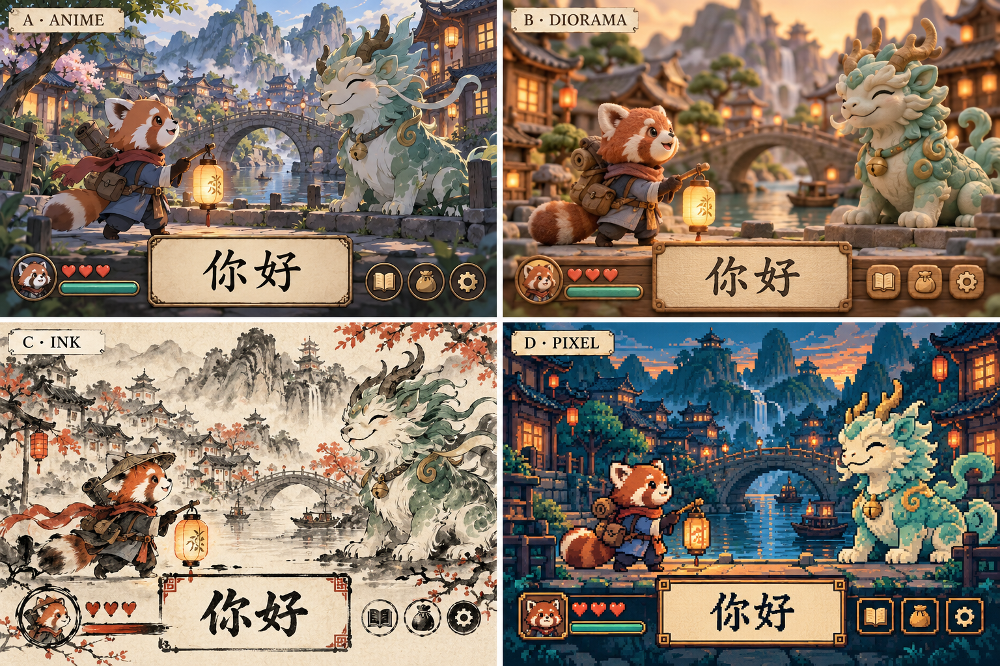

先選整個世界的畫法
四個方向共用同一個主角與場景來比較。我的首選是 B；風格選定後，首頁、角色、怪物、地形、對話框與戰鬥介面一起統一。

A清線動畫冒險
2.5D 色塊角色、手繪遠景、清楚輪廓。
角色與怪物採同一套描線；介面像旅途手冊，特效以平面色塊呈現。
表情與劇情演出較自然；現有 3D 材質、首頁插畫需要重做。
B柔光 3D 微縮冒險
圓潤模型、霧面材質、柔和陰影與微縮村鎮。
角色、地面、房屋共用光源；卡片與按鈕採簡化木牌／紙片語言。
首選。最接近現有小熊貓動畫；需要完整場景與一致材質，仍需重整首頁。
C水墨繪本武俠
紙感、墨線、淡彩山水與少量朱紅。
人物、怪物、地圖皆採筆觸輪廓；介面像簡潔書頁，中文字維持清晰字型。
武俠旅程氣氛最強；現有圓潤 3D 角色須重新演繹，動畫走克制路線。
D精緻像素 RPG
一致像素密度、俯視地圖、側視戰鬥。
角色、場景、道具統一像素規格；中文字用清楚的正常字型，外框才用像素。
探索感直接；需重做角色動作與素材，不能把 3D 圖縮小就當作像素風。
這些是原創美術方向，不套用現成動漫角色。比較圖是概念圖，不是現有遊戲實機或已完成素材。
STORY INFOGRAPHIC
八站，一次有起點與終點的旅行
出發找失聯驛站 → 幫助沿路居民 → 發現封存術失控 → 連通驛路解封 → 回鄉交付最後一封信。
讓中文變成完成任務的工具
地圖選目的地→短對話接任務→使用中文解決問題→看見城鎮改變→複習與下一站
玩家的身分
學生替小熊貓信使命名，自己就是旅途主角；小燈中的燈靈陪伴並提示。先保留單一主角，避免把製作量花在多職業、多角色上。
不是每次都打怪
關卡交替使用送信、問路、修橋、對話、安撫守護獸與分段首領戰。完成後能看到船重新開航、橋接通、街市點燈，角色也會在後面再次出現。
練習要有真正的差別
照字輸入練辨認與鍵盤；提示回想練記憶；情境選答練理解。三種成績分開記錄。單純替打字題換一段任務文案，仍然只是打字練習。
不讓故事擋住上課
開場對話短、可跳過與重看。保留教師選關和快速練習。錯誤給提示與再練機會；不加體力、抽卡或裝備數值門檻。
介面要調整，但輸入操作應保持熟悉
地圖成為旅程入口
將目前重複的關卡卡片改成區域地圖，顯示目前目的地、委託與已恢復的地點。課程、字體模式與詞庫目錄仍可直接開啟。
戰鬥只留下當下需要的資訊
上方放地點與任務進度；中央是同風格角色和場景；下方固定題目、回饋與輸入。任務對話出現在計時開始前，不在作答中插入。
手機鍵盤打開時縮小或隱藏場景，優先保住題目和輸入框。保留暫停、減少動態、靜態替代畫面與原有存檔機制。
竹影古道 · 修復路牌2 / 3
你的信使守護獸
配置示意；上方色塊是構圖佔位，不是背景美術。
每一關不同，如何做得下去？
區域改地貌，每關再改地點與構圖。只把同一片森林換成藍色，不算新場景。
| 層級 | 需要變化的內容 | 例子 |
|---|
| 八個故事區域 | 地貌、建築、遠景、地面、光線與環境聲 | 竹林古道、河港木橋、紅岩吊橋、雪嶺驛站 |
| 同區域的不同關卡 | 前中後景組合、路線、鏡頭位置、任務道具 | 竹林入口 → 溪畔石階 → 廢棄驛亭；不是同圖改色 |
| 同一關的重玩 | 保留地點辨識，反映任務前後狀態 | 斷橋 → 修復的橋；暗街 → 點燈的街 |
大量詞庫會產生許多練習章節。八張背景不可能讓所有章節都獨一無二。提案是八組場景素材搭配固定的關卡構圖資料；各關有自己的場景 ID，不能再用敵人種類決定背景。若要求每關一張全新手繪圖，需依實際關卡數另計素材量。
故事與現有詞庫：分開，但互相連接
八站是敘事進程，不等於八包各 20 詞。每站包含數個委託，課程詞包依所選難度分配；完成主線後，剩餘詞彙透過後日談與各地支線繼續，所有詞包仍可查閱與直接練習。
課程與字體模式→原有詞包與學習進度＋故事任務與場景
不直接把詞庫序號當成情境：要先建立主題標籤，才知道哪些詞適合貨單、問路或書信。既有三次正確練習先保留；若要把認讀／回想／理解各算一次，必須另訂規則並遷移舊紀錄，不能默默變更完成標準。
主線解鎖按任務完成；HSK／TOCFL 等級由學習者選擇。進入更遠的地點不代表強制升級語言難度。舊存檔保留學習成果，故事進度新增獨立欄位。
目前可沿用的基礎與新增工作
| 沿用 | 調整／新增 |
|---|
| 中文／注音輸入、暫停、複習、詞庫分級 | 世界地圖、短對話、任務條件、故事狀態 |
| 逐詞練習計數、歷史、備份與多分頁寫入保護 | 故事存檔版本與遷移；保留既有詞彙完成狀態 |
| 角色動畫與戰鬥回饋架構 | 獨立場景設定；同風格角色、怪物、首頁與 UI |
| 現有打字戰鬥 | 回想、情境理解等新題型；題目、答案與提示需內容審核 |
建議先做可玩的第一段：青禾村 → 竹影古道 → 溪橋埠，包含短對話、三張明顯不同的場景、一個非戰鬥任務、一場守護獸戰，以及完成任務後的場景變化。這能驗證代入感和學習節奏，再展開八站。
完成條件：學生能說出自己的身分與下一個任務；三站截圖不看標題也辨認得出地點；手機中文輸入不被故事遮住；舊詞彙進度保持正確。這些是後續驗收條件，本次尚未進行學生測試。